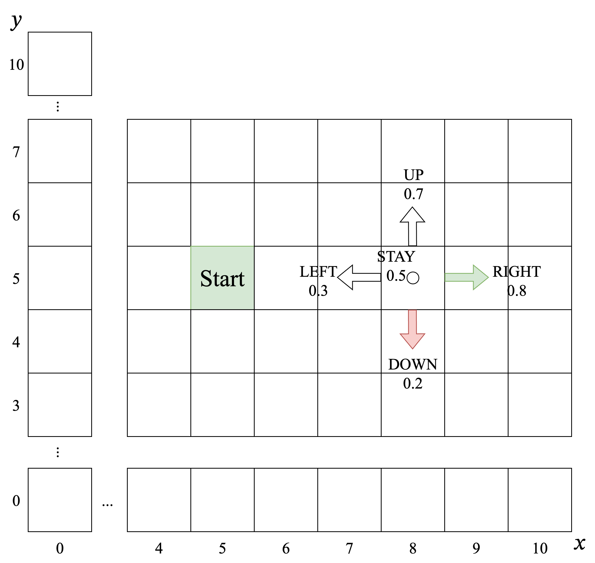
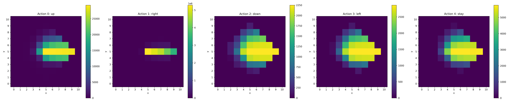
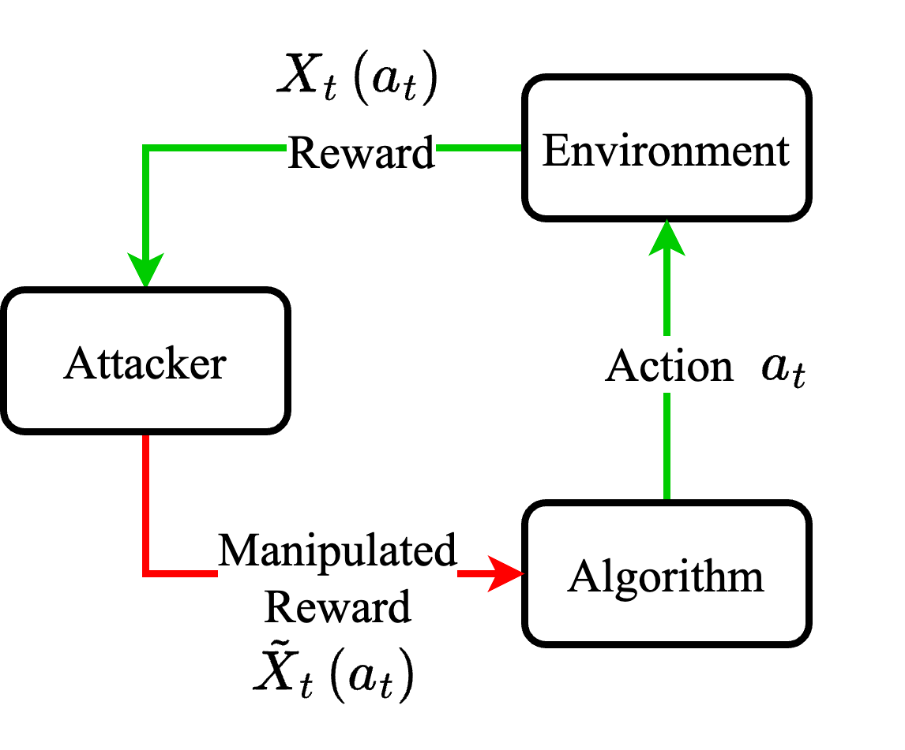
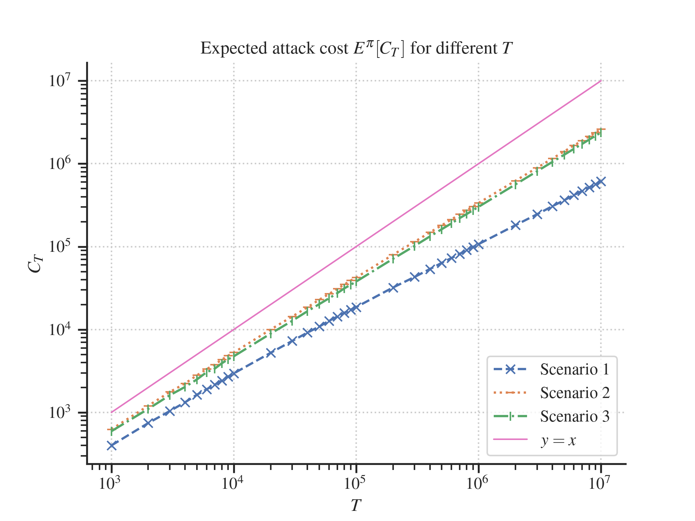
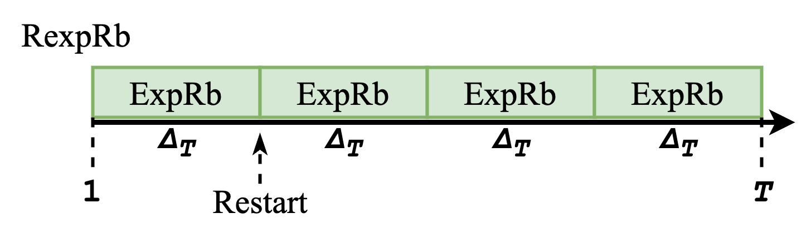
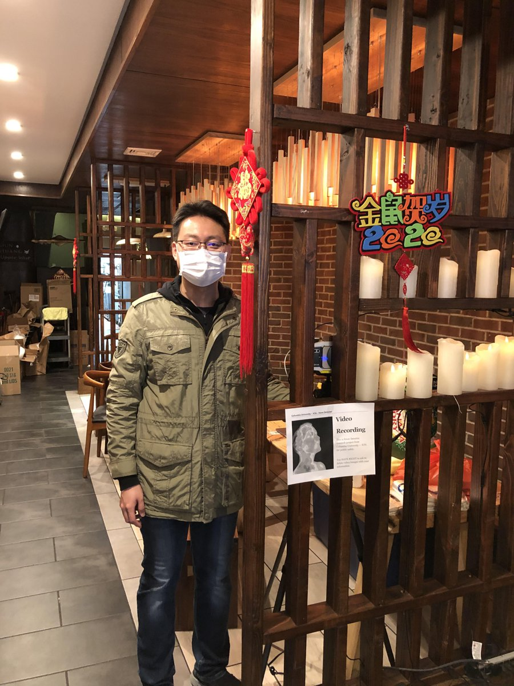
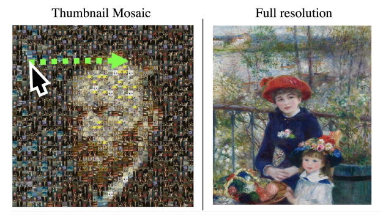
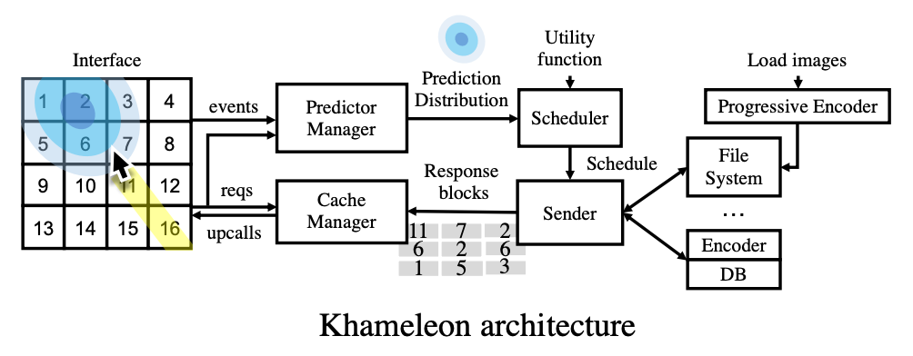
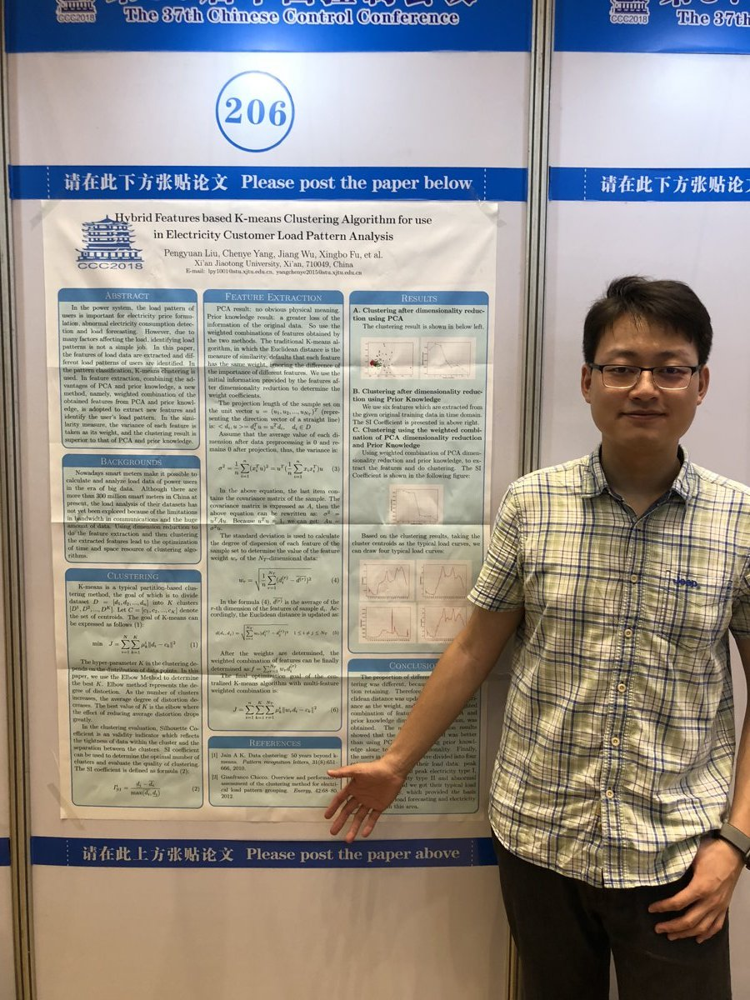

In this article we present the Hoeffding's Inequality and its proof. To do so, we first go through the Hoeffding's Lemma and Markov's Inequality. Also, we introduce the concept of Martingales and related Azuma-Hoeffding inequality. [PDF]
Supervised by Prof. Lifeng Lai, UC Davis.
Graduate Student Researcher in Lai's group.
Supervised by Prof. Lifeng Lai, UC Davis.
Graduate Student Researcher in Lai's group.
Supervised by Prof. Lifeng Lai, UC Davis.
Graduate Student Researcher in Lai's group.


Supervised by Prof. Lifeng Lai, UC Davis.
Graduate Student Researcher in Lai's group.



Supervised by Prof. Xiaofan (Fred) Jiang, Columbia University.
Summer Research Assistant in Columbia Intelligent and Connected Systems Lab.
Supervised by Prof. Xiaofan (Fred) Jiang, Columbia University.
Research Intern in Columbia Intelligent and Connected Systems Lab.

Supervised by Prof. Eugene Wu, Columbia University.
Research Intern in WuLab Columbia University.


Supervised by Prof. Xiaoqi Zhou, Sun Yat-sen University.
Research Intern in Optical Quantum Information Lab.
Supervised by Prof. Jiang Wu, Xi'an Jiaotong University.
Member of XJTU Information-technology Talent Program.
Research Intern in Ministry of Education Key Lab for Intelligent Networks and Network Security.

University of California, Davis
Columbia University
Sun Yat-sen University
Xi'an Jiaotong University